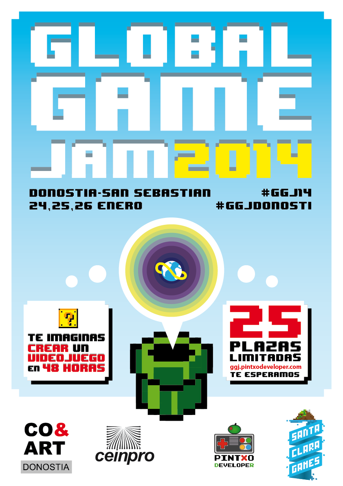

Santa Clara Games will be at the Global Game Jam 2014 in Donostia

The Global Game Jam 2014 is coming to our city, and Santa Clara Games will not only be taking part, but sponsoring it as well!
We've been pushing to bring the Global Jam 2014 to Donostia. Santa Clara Games will be organizing the event along with the folks from Pintxo Developer.
Mr. Pixelsmith (@ipuntom) and the Undead Pirate Captain (@gravstar) will both be getting down and dirty. The Heart-Core developer @twikoon is on a trip to the USA, but he shoud be with us via Google Hangouts. We will be tweeting and uploading photos and videos of the event as well as our super-amazing, astonishngly incredible, made-in-48-hours game.
Stay tuned!